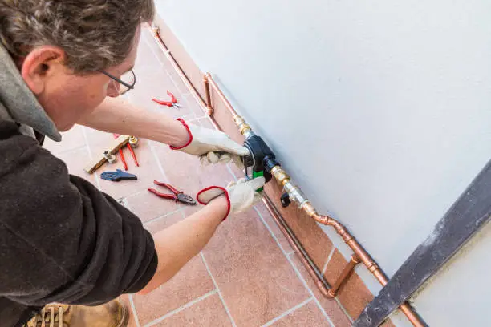

What We Offer: Solutions for Every Green Space
At Gross Irrigation, our expertise spans across a comprehensive suite of services designed to optimize your garden's health and minimize water consumption. From initial consultation and custom design to seamless installation and ongoing maintenance, we provide end-to-end solutions that blend cutting-edge technology with ecological responsibility. Discover how our tailored approaches can transform your green space into a vibrant, water-efficient oasis.
Drip & Sprinkler Installations
Our core offering revolves around the meticulous design and installation of state-of-the-art drip and sprinkler systems. We understand that every garden is unique, which is why we provide solutions compatible with a diverse range of environments, including sprawling lawns, serene terrace gardens, innovative vertical walls, and charming balcony setups. Our approach begins with a thorough analysis of your soil type, ensuring that the irrigation plan is perfectly tailored to the specific needs of your plants and the composition of your land. This soil-type-based planning prevents overwatering in clay soils and ensures adequate hydration in sandy soils, leading to healthier root development and more vibrant foliage. Beyond basic installation, we integrate advanced app-controlled timers and sophisticated zone systems. This means you have complete command over your irrigation from the palm of your hand, whether you're at home or away. Our multi-zone systems allow for precise watering schedules based on plant type, sun exposure, and soil moisture levels, ensuring that each area of your garden receives exactly what it needs, when it needs it. This level of control not only promotes optimal plant health but also dramatically reduces water waste, making your garden both beautiful and eco-friendly. Our technicians are highly trained in the latest installation techniques, ensuring a seamless and efficient setup with minimal disruption to your existing landscape. We use only high-quality, durable components designed to withstand various weather conditions and provide years of reliable service, ensuring your investment truly grows with your garden.
Water Use Optimization
In an era where water conservation is paramount, Gross Irrigation specializes in transforming outdated, inefficient irrigation systems into modern, water-saving powerhouses. Many older systems are prone to leaks, uneven distribution, and lack the intelligence to respond to real-time environmental conditions, leading to significant water wastage. Our optimization services begin with a comprehensive audit of your existing setup, identifying areas of inefficiency and recommending targeted upgrades. We focus on converting conventional, high-consumption systems to more efficient drip or micro-sprinkler technologies, which deliver water directly to the plant root zone, minimizing evaporation and runoff. A cornerstone of our optimization strategy is the installation of smart meters. These intelligent devices provide you with daily, granular insights into your water consumption, allowing you to monitor usage patterns, identify anomalies, and make informed adjustments. Coupled with this, our advanced leak detection and auto shutoff technology act as a vigilant guardian for your garden. Should a leak occur, the system immediately detects it and automatically shuts off the water supply, preventing costly damage and substantial water loss. This proactive approach not only safeguards your property but also contributes significantly to reducing your environmental footprint and lowering your utility bills. We empower you with the data and technology needed to become a truly responsible water steward, ensuring your garden thrives without unnecessary consumption.
Rainwater System Integration

Embrace true sustainability with Gross Irrigation's rainwater system integration services. We help you leverage nature's most abundant resource by seamlessly connecting your irrigation system with rooftop rainwater harvesting tanks. This not only provides a free, natural source of water for your garden but also reduces your reliance on municipal water supplies, contributing to significant cost savings and environmental benefits. Our experts design and implement systems that efficiently collect, filter, and store rainwater, ensuring it's clean and ready for irrigation. We consider factors like roof size, rainfall patterns, and garden water demand to size the collection and storage components appropriately, maximizing your water independence. Furthermore, we offer greywater reuse compatibility, allowing you to repurpose water from sinks, showers, and laundry for non-potable uses like garden irrigation. This advanced integration significantly reduces your household's overall water footprint. Our systems are designed with robust overflow and backup safety setups, ensuring that in periods of heavy rainfall, excess water is safely diverted, preventing any damage to your property. In times of drought or low rainfall, our smart systems can automatically switch to a backup water source (like municipal supply), ensuring your garden never goes thirsty. By integrating these natural and recycled water sources, Gross Irrigation provides a holistic, eco-conscious approach to garden hydration that is both efficient and resilient.
Zone-Based Irrigation Planning

Effective irrigation is not a one-size-fits-all solution. Gross Irrigation excels in creating sophisticated zone-based irrigation plans that cater to the unique microclimates and plant requirements within your garden. Our planning process begins with a detailed assessment of your landscape, mapping out areas based on sun exposure (full sun, partial shade, deep shade), soil type variations, and existing plant groupings. This meticulous mapping allows us to design distinct irrigation zones, each with its own customized watering schedule and flow rate. For instance, drought-tolerant plants in a sunny, well-drained area will receive less water than moisture-loving plants in a shaded, heavier soil zone. We implement plant-specific flow rates and emitter types to ensure that every plant receives its ideal amount of water, preventing both underwatering and overwatering, which are common causes of plant stress and disease. Our systems allow for custom programming by season, automatically adjusting watering durations and frequencies as temperatures change and plants enter different growth cycles. This dynamic approach ensures that your garden thrives year-round, conserving water during cooler months and providing adequate hydration during peak growing seasons. Zone-based planning not only optimizes plant health and vitality but also significantly enhances water efficiency by eliminating wasteful watering of areas that don't need it. It's a smart, scientific approach to garden care that delivers measurable results and a more resilient landscape.
Maintenance Plans

An irrigation system is an investment, and like any investment, it requires regular care to ensure its longevity and peak performance. Gross Irrigation offers comprehensive maintenance plans designed to keep your system running flawlessly and efficiently year after year. Our quarterly visits are a cornerstone of this service, where our certified technicians conduct thorough inspections of all components, including pipes, emitters, sprinklers, valves, and controllers. During these visits, we check for leaks, clogs, damaged parts, and ensure that all sensors and smart features are functioning correctly. We also make necessary adjustments to sprinkler heads and drip lines to account for plant growth and seasonal changes, ensuring optimal water delivery. Beyond routine checks, our maintenance plans include prompt emergency support within 24 hours. Should any unexpected issue arise – a burst pipe, a malfunctioning controller, or a sudden leak – our rapid response team is on standby to diagnose and rectify the problem swiftly, minimizing potential water loss or damage to your landscape. We also offer a no-hassle parts replacement policy for components covered under your plan, ensuring that any necessary repairs are carried out using high-quality, genuine parts without additional hidden costs. With a Gross Irrigation maintenance plan, you gain peace of mind knowing that your smart irrigation system is always in expert hands, delivering consistent performance and maximizing your water savings without any effort on your part.